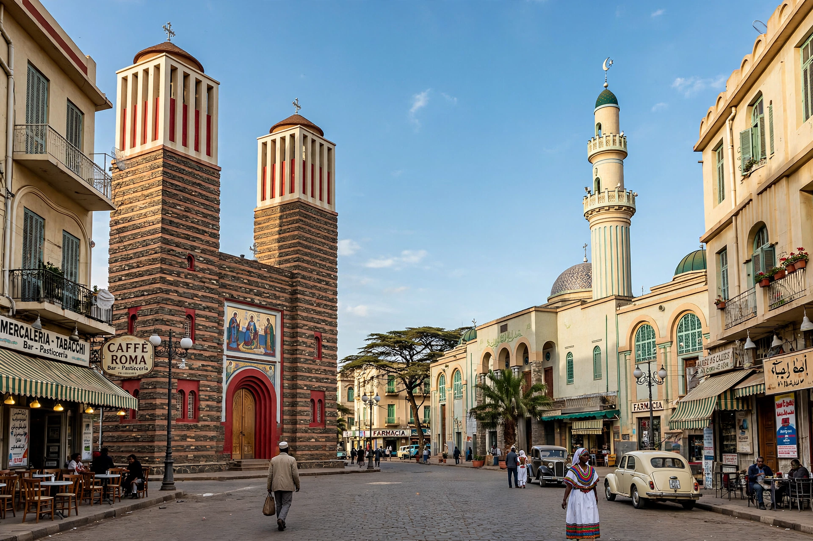

Religion in Eritrea
| Religion in Eritrea | |
|---|---|
| Main faiths | Christianity (Eritrean Orthodox, Catholic, Protestant), Islam (Sunni) |
| Historic church | Eritrean Orthodox Tewahedo Church |
| Recognised groups | Orthodox, Catholic, Evangelical Lutheran, Sunni Islam (state-recognised) |
| Status | No official state religion; unregistered groups restricted |

Religion in Eritrea consists of two major faiths: Christianity and Islam. Estimates of the split vary — the Eritrean government and many reference works describe the population as roughly half Christian and half Muslim, though the US State Department and Pew Research estimates have suggested Christians form a majority of around 60 percent. Eritrea has no official state religion, but the government recognises only four religious groups: the Eritrean Orthodox Tewahedo Church, the Eritrean Catholic Church, the Evangelical (Lutheran) Church of Eritrea, and Sunni Islam.
Christianity
Christianity reached the region in antiquity through the Kingdom of Aksum; tradition holds that Frumentius converted King Ezana in the 4th century, making the area one of the earliest Christian states. The Eritrean Orthodox Tewahedo Church, historically part of the Ethiopian Orthodox Church, became autocephalous after Eritrean independence in 1993, and its adherents — concentrated in the highlands among Tigrinya speakers — form the largest single denomination. The Eritrean Catholic Church, an Eastern Catholic church in full communion with Rome, was established as a metropolitan church in 2015. Small Protestant communities, including Lutherans whose presence dates to 19th-century Swedish missions, also exist.
Islam
Islam arrived early: according to tradition, followers of Muhammad sought refuge with the king of Aksum in the 7th century (the First Hijrah), and Muslim communities developed along the Red Sea coast and in the western lowlands. Most Eritrean Muslims are Sunni of the Shafi'i school; Sufi orders such as the Khatmiyya are influential. The office of Grand Mufti is state-recognised, and mosques in Asmara include the Great Mosque (Khulafa al-Rashidun), built in 1938.
Other faiths
Indigenous beliefs persist in some rural communities. Small numbers of Hindus, mostly of Indian origin, and a historically tiny Jewish community have also been present. Jehovah's Witnesses, Pentecostals and other unregistered groups face severe restrictions.
Religious freedom
A 2002 government directive required all religious groups to register; only the four recognised faiths were approved. Since then, authorities have closed churches of unregistered denominations and detained thousands of believers, according to the US State Department, the UN Commission of Inquiry on Eritrea, and human-rights organisations, which have repeatedly designated Eritrea a "country of particular concern" for religious freedom. The government disputes such characterisations, citing national-security grounds. The Orthodox patriarch Abune Antonios was deposed in 2006 and held under house arrest until his death in 2022, a case that drew international attention.